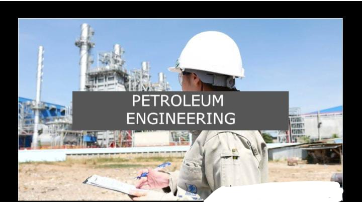

M.B.M. Engineering College (Mugneeram Bangur Memorial Engineering College, MBM) is a college in Jodhpur,
India.
M.B.M. Engineering College, Jodhpur Motto Faith and Labour Type college.
Established in 1951 ChancellorGovernor of
RajasthanVice-ChancellorVice-Chancellor of [MBM]Students3000+
Location:-
Jodhpur
,
Rajasthan
,
India
CampusUrban, 62 acres (250,905.1 m2)
The college has a full-fledged Department for Training and Placement which focuses on each student with the
objective to place them in the most prestigious organisations of India.
T&P department contacts various
companies and industries throughout the year and invites them for campus recruitment.
Companies like HCL, Vedanta, TCS, TCS, WIPRO, Mahindra, Adobe, Accenture, Torrent Gas, and other core
companies visit every year for campus placements.
The college also provides different training programs on aptitude-related analytical skills, communicative
English, soft skills, and personality development programs to help the students to crack the interview
easily and get placed in reputed companies. In addition to doing internships and practical training in
reputed organizations across India, students are also provided with various opportunities and research
projects at IITs.
For more info:-
Website:- website for MBM college
Government Engineering College Bikaner, located in Bikaner, is an educational institution of the government
of Rajasthan, India.
The institute is affiliated with the Bikaner Technical Univerrsity.
Govt. Engineering College Bikaner.
Former name
Engineering CollegeMottoA place to learn; a chance to grow.TypeGovernmentEstablished2000AffiliationBikaner
Technical University
Principal-J.P Bhamu
Academic staff
200+Students4000+ (ECB Campus)
Address:-
Govt. Engineering College Bikaner, Karni Industrial Area, Pugal Road, Bikaner 334004
,
Bikaner
,
Rajasthan
,
India
CampusUrban, Spread Over 150 AcresColoursSteel grey and white.
For more info:-
Website:-website of engineering college bikaner
Government Engineering College, Bharatpur (now Engineering College, Bharatpur) is a government autonomous
engineering college of Government of Rajasthan in Bharatpur, Rajasthan, India.
It was established in
2007.
At the outskirts of the city Bharatpur, GEC Bharatpur is located in the Golden Triangle (the
tourist
circuit that connects the national capital New Delhi, Agra and Jaipur) at National Highway No.-11.Since then
it has constantly grown with a very fast pace. It is the first government
engineering college in the Bharatpur division. The campus is spread over 40 acres.
Engineering College, Bharatpur Type Public Established in 2007
Director-Dr. Ravi Gupta.
Location:-
Bharatpur
,
Rajasthan
,
India
Campus Rural Affiliations Rajasthan Technical University, Kota / AICTE New Delhi.
For more info:-
Website:-website of engineering college bharatpur
The College of Technology and Engineering (CTAE[1]), is a public engineering college located
in Udaipur, Rajasthan, India.
It is one of the top ranking engineering institute of the state offering
varied courses in engineering.
College of Technology and Engineering, Udaipur
Motto Niyatam Kuru Karma Twamam
Type Government Established 1964
Dean-Dr. Ajay Kumar Sharma.
Location:-
Udaipur
,
Rajasthan,
India
For more info:-
Website:-website for CTAE udaipur
College, Ajmer, generally referred to as ECA, is a public state technical college located
in Ajmer, Rajasthan, India.
It was established in 1997.
Engineering College Ajmer Motto आ नो भद्रा: क्रतवो यन्तु विश्वत:
(Let noble thoughts come to us from every
side. )
Type Education Established 1997 Affiliation Bikaner Technical University
Principal- Dr. Rekha Mehra.
Academic staff:-
75
Administrative staff:-
60 Undergraduates
2000 Postgraduates
Address:-
Badliya Chouraha N.H.8
,
Ajmer
,
Rajasthan
,
India
For more info:-
Website:-website for engineering college Ajmer
The Engineering College Kota is an autonomous technical institute in Northern India.
It houses the
headquarters of Rajasthan Technical University and, hence, is referred as University Department of Rajasthan
Technical University (UD-RTU).
The institute was established in 1981 by the Government of Rajasthan and
was
named Engineering College, Kota.
University Departments, Rajasthan Technical University, Kota Motto Shramev Jayate (Hard Work Always
Wins)
Type Rajasthan Technical University Established in 1981
Location:-
Kota
,
Rajasthan
,
India
CampusUrban, 385 acres (1.56 km2)
For more info:-
Website:-website for engineering college Kota
The Engineering College Jhalawar, Rajasthan was established in 2007 in the Jhalawar
district of Rajasthan, India.
इंजीनियरिंग कॉलेज
झालावाड़ राजस्थान
Motto ज्ञानम् परमम् ध्येयम्
(jñānam paramam dhyeyam)
(Sanskrit)
Motto in English
Knowledge is the Supreme Goal
Type An Autonomous Institute Of Govt. Of Rajasthan Established in 2007
Principal-Dr Kartar Singh
Location:-
Jhalarapatan
,
Rajasthan
,
India
CampusRular, spread over 45 acres (0.18 km2) in South-East of Rajasthan.
For more info:-
Website:-website for engineering college Jhalawar
Manikya Lal Verma Govt. Textile and Engineering College (previously known as Manikya Lal Verma Textile
Institute or MLVTI) is an autonomous engineering institute of the government of Rajasthan managed by Manikya
Lal Verma Textile Institute society in Bhilwara, Rajasthan, India.
Mankiya Lal Verma Govt.Textile and Engineering College Type Public Established 1988
Principal-Dr. Dhirendra
sharma
Undergraduates:-1500
Location:-
Bhilwara
,
Rajasthan
,
India
For more info:-
Website:-website for mlv texttile and engineering college Bhilwara
What is Computer Science Engineering?
One of the most sought after courses amongst engineering students, Computer Science Engineering (CSE) is
an academic programme which integrates the field of Computer Engineering and Computer Science. The
programme, which emphasises the basics of computer programming and networking, comprises a plethora of
topics. The said topics are related to computation, algorithms, programming languages, program design,
computer software, computer hardware, etc.
Computer science engineers are involved in many aspects of computing, from the design of individual
microprocessors, personal computers, and supercomputers to circuit designing and writing software that
powers them.
The course is offered by technical institutes across India and Abroad at the UG (Undergraduate) and PG
(Postgraduate) level where students are awarded BTech and MTech degree respectively. Students pursuing
the course will be taught about design, implementation, and management of information system of computer
hardware and software.
Even though CSE is one of the engineering specialisations, candidates pursuing the programme have the
option of further choosing amongst various other specialisations like Telecommunication, web designing,
computer hardware & software implementation & maintenance, etc.
For more info:-
What is IT ENGINEERING?
Information engineering (IE), also known as information technology engineering (ITE), information
engineering methodology (IEM) or data engineering, is a software engineering approach to designing and
developing information systems.
For more info:-
What is Civil Engineering?
One of the oldest and broadest engineering disciplines, Civil Engineering involves planning, designing,
constructing, maintaining and supervising infrastructures which include facilities essential to modern
life like highways, bridges and tunnels, schools, hospitals, airports and other buildings, sewage
systems and water treatment facilities. Subsequently, the course also involves protecting the public and
environmental health as well as improving existing infrastructure.
According to a new research report by Global Market Insights, Inc, the Civil Engineering Market size is
expected to grow up to USD 11.72 trillion by 2025.
Various colleges in India offer Civil engineering at the UG and PG level, thus leading
to BTech and MTech degrees respectively.
For more info:-
What is Chemical Engineering?
Chemical engineering can be defined as the set of processes and principles applied to convert raw
materials/chemicals into useful products such as clothes, drinks, paint, fuel, etc. Chemical engineering
uses principles of chemistry, biology and economics to efficiently use, produce, design, transport and
transform products, energy and materials. Scope in Chemical Engineering is good and evergreen. Engineers
with specialisation in the field are always in demand.
Chemical engineers develop, design new processes or improve existing processes to develop useful
products. Chemical engineers are also responsible for managing resources, protecting the environment and
ensuring human health & safety. Along with it, chemical engineers are also involved in plant design
operation and modelling. Chemical Engineering subjects include fundamentals from control engineering,
chemical reaction engineering, nuclear engineering, biological engineering etc.
more info:-
What is Electrical Engineering?
Electrical Engineering is that branch of Engineering which deals with the study of application of
electricity, electronics and electromagnetism. Trained electrical engineers design electric circuits and
equipment. They work on large power plants as well in small hardware companies which includes designing,
manufacturing and operating power plants, industrial machinery, electrical motors, computer chips and
ignition systems for automobiles, aircrafts, space crafts and all kinds of engines.
Electrical Engineering is spread across a range of specialties such as acoustics, speech, signal
processing to electromagnetic compatibility, automobiles to vehicular technology, geo-science and remote
sensing, laser and electro-optics, robotics, ultra-sonic, ferroelectrics and frequency control.
A qualified electrical engineer has the option to choose his/her line of work from a range of areas like
computers, cell phone, electronic gadgets, radars, navigation systems, power plant, etc. Average
starting salary of fresh electrical engineering graduates is Rs 4 lakh and upwards.
For more info:-
Website for Electrical Engineering
What is Electronics & Communication Engineering?
Electronics and Communications Engineering (ECE) involves researching, designing, developing and testing
of electronic equipment used in various systems. Electronics and Communications engineers also
conceptualize and oversee the manufacturing of communications and broadcast systems.
This stream of engineering deals with analogue transmission, basic electronics, microprocessors,
solid-state devices, digital and analogue communication, analogue integrated circuits, microwave
engineering, satellite communication, antennae and wave progression. It also deals with the
manufacturing of electronic devices, circuits, and communications equipment.
In India, Electronics and Communications Engineering is offered by various colleges at the UG as well PG
level leading to BTech (4 years) and MTech (2 years) degrees respectively
For more info:-
What is Mechanical Engineering?
One of the oldest and broadest fields of engineering, Mechanical engineering deals with the design,
construction, and use of machines. The programme endows students with the basic understanding and
knowledge of how heavy tools and machinery work. A student pursuing a mechanical engineering programme
will acquire knowledge about designing of automobiles, electric motors, aircraft and other heavy
vehicles.
Mechanical engineers design everything from new batteries, athletic equipment to medical devices and
from personal computers, air conditioners, automobile engines to electric power plants. These engineers
also design machines that produce these innovations.
The scope of mechanical engineering in India and abroad is huge for every aspect of our lives are
touched by mechanical engineering in one way of the other. Spanning multiple industries, the career
opportunities for students pursuing the programme is huge.
In India, Mechanical engineering is offered by various engineering colleges in India at the
undergraduate as well postgraduate level where students are awarded BTech and MTech degree respectively.
For more info:-

What is Petroleum Engineering?
Petroleum Engineering is related to the innovation and exploration of the process of oil and gas
extraction. It is advanced from Mining Engineering and Geology, and linked to Geoscience.
The activities in Petroleum Engineering involves development of equipment to extract oil and gas, making
plans to drill in oil and gas fields; developing ways to inject water, chemicals, gases, or steam into
an oil reserve; keep an eye at oilfield equipment installation, operation and maintenance.
There are many petroleum companies operating worldwide, which creates a better opportunity for Petroleum
Engineers. These engineers develop new technology for the production of hydrocarbons from oil shale and
offshore oil and gas fields.
For more info:-
What is Electrical and Electronics Engineering?
“Electrical & Electronics Engineering” is a growing and one of the most sought disciplines in the field
of engineering study. It comprises with the electrical engineering and electronics engineering.
It is originated by the electrical engineering. By the technically modernization of the world and
computerization in our work field, it is necessary to use and understand the circuits and computerized
devices in electrical & electronic field.
For more info:-
What is Electronics and Computer Engineering?
Electronics and Computer Engineering is a branch of Electronics Engineering that deals with the effects
of electrons to build components, devices, systems, or equipment.
Not only the students of computer engineering deals with the design of computers and computer systems
along with fundamental aspects of electronics hardware concepts, but they also learn to design new
hardware and software. Reva’s Computer engineers work on a system's software as well.
This provides the
perfect balance of best of both worlds – Software driven by hardware which makes the transition to the
world of job opportunities feel seamless.
For more info:-
What is Mining Engineering?
Mining Engineering is an engineering discipline that involves the science, technology and application of
extracting and processing minerals from a natural environment. In India, mining engineering
courses includes extraction of valuable ores from the ground for processing and utilization. It involves
all the phases of mining operations starting from exploration and discovery, feasibility, development,
production, processing, and marketing. After that it is also required to restore and rehabilitate the
land from where the extraction was done.
For more info:-
Website for Mining Engineering